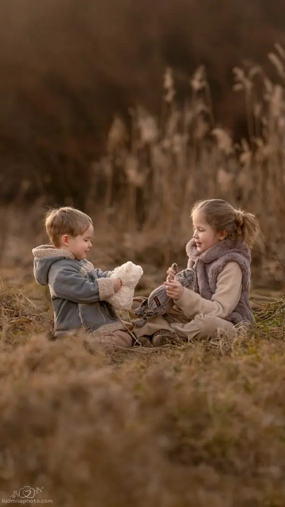
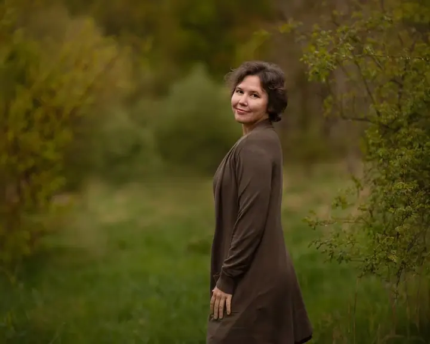
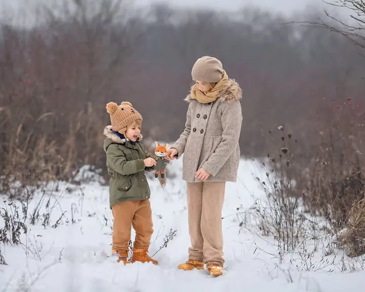

Rodinné focení
Tvořím umělecké rodinné fotografie s duší, nejčastěji venku v přírodě. Fotím v každém ročním období, od jarní zeleně po zimní sníh.

Jmenuji se Ludmila Zacharová a jsem rodinná fotografka z Prahy. Už deset let tvořím umělecké rodinné fotografie, venku v přírodě i v domácím ateliéru. Fotím v Praze i kd…
Rezervovat termínFotografii se věnuji deset let a nejvíc mě baví rodiny. Maminky s miminky, sourozenci, kteří se spolu smějí, babičky i první dny s novorozencem. Chci, aby fotky nebyly jen hezké, ale aby měly duši a za pár let vám připomněly, jak to u vás doma opravdu vypadalo.


Nejraději fotím venku a nechávám se vést ročním obdobím. Na jaře sněženky a svěží zeleň, v létě vysoká tráva, na podzim teplé tóny a v zimě sníh a zamrzlé rákosí. Když počasí nepřeje, máme k dispozici můj domácí ateliér.
Sídlím v Praze, ale za vámi ráda přijedu kamkoli po Česku. Na focení nikam nespěchám, děti dostanou čas se rozkoukat a vy si můžete focení prostě užít.
Co fotím
Tvořím umělecké rodinné fotografie s duší, nejčastěji venku v přírodě. Fotím v každém ročním období, od jarní zeleně po zimní sníh.
Focení miminek a prvních společných týdnů. Klidně u vás doma, v přirozeném světle a v pohodovém tempu.
Když počasí nepřeje nebo chcete jemné portréty na malířském pozadí, můžeme fotit v mém domácím ateliéru.
Postup
Napište mi na e-mail nebo zavolejte. Řekněte mi, koho chcete fotit a jakou atmosféru si představujete.
Společně vybereme místo v přírodě podle ročního období, nebo focení u vás doma či v mém domácím ateliéru. Poradím i s oblečením.
Fotíme bez spěchu, s prostorem na hraní a mazlení. Děti nemusí stát a usmívat se, stačí, když budou samy sebou.
Fotky pečlivě vyberu a upravím v mém typickém jemném stylu. Dostanete je připravené k prohlížení i k tisku.
Otázky
Sídlím v Praze, ale fotím po celém Česku. Nejčastěji venku v přírodě, u vás doma nebo v mém domácím ateliéru.
Termíny v nejhezčích obdobích se plní rychle, proto se vyplatí ozvat s předstihem. Teď přijímám objednávky na jarní focení.
Nejlépe vypadají jemné, tlumené a vzájemně sladěné barvy bez výrazných nápisů a log. Konkrétní tipy vám ráda pošlu před focením.
Ideální je ozvat se mi ještě před porodem. Termín pak upřesníme podle toho, kdy miminko přijde na svět a jak se budete cítit.